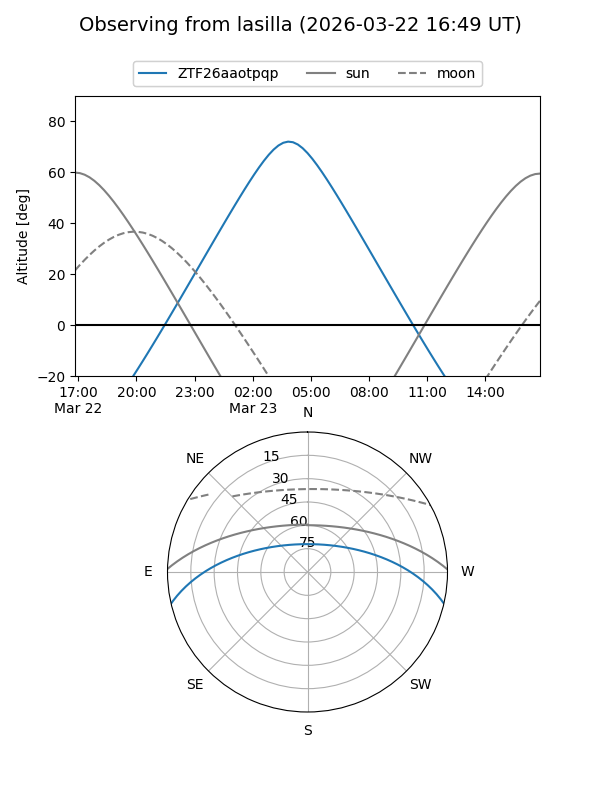
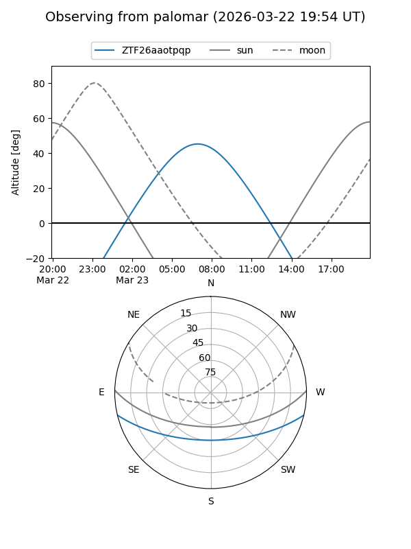

ZTF26aaotpqp
Target ZTF26aaotpqp at 2026-03-23 07:38
Aliases and brokers:
FINK: link
Lasair: link
ALeRCE: link
alt names
ZTF26aaotpqp (ztf,fink_ztf)
Coordinates:
equatorial (ra, dec) = 167.5683,-11.19315
equatorial (HMS+DMS) = 11:10:16.40,-11:11:35.34
galactic (l, b) = (266.9492,+44.49610)
Flags:
Photometry:
last ztfg=16.80
1 ztfg detections
Lightcurve
Visibility


Additional plots